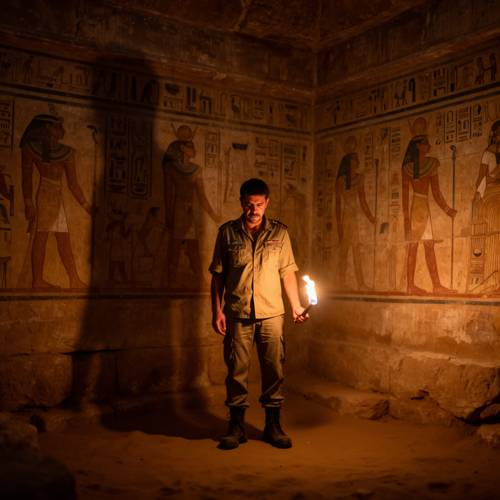
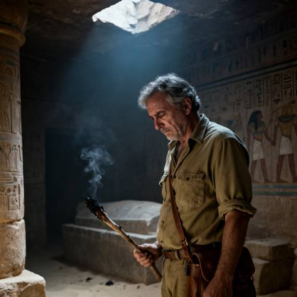
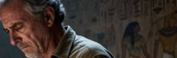

World Knowledge — An Egyptian archaeologist stood in the pyramid tomb, but the torch in
An Egyptian archaeologist stood in the pyramid tomb, but the torch in his hand did not illuminate the mural. His face was full of disappointment.

Direct — one call, no iteration

Continuum — Qwen3.8-27B + FLUX.2-dev
Judge — Direct
PASSWorld Knowledge — The image depicts a man who could be an archaeologist, standing in a room with stone walls covered in murals and hieroglyphs consistent with an Egyptian tomb.
FAILGrammar - Negation — The prompt requires that the torch held by the man 'did not illuminate the mural'. However, in the image, the lit torch is the primary light source and is clearly illuminating the murals on the walls around the man. The details of the murals are visible because of the torch's light.
Judge — Continuum
PASSWorld Knowledge — The image features a man dressed as an archaeologist in a khaki shirt and trousers with a leather satchel. He is inside a stone chamber that resembles an Egyptian tomb, characterized by a large pillar with carved hieroglyphics, a stone sarcophagus in the background, and painted murals on the far wall depicting figures in an ancient Egyptian style.
PASSGrammar - Negation — The man is holding a torch which is visibly extinguished, as it is only emitting smoke and not flame or light. The murals on the wall are illuminated, but the light source is a beam coming from an opening in the ceiling above, not the torch. Therefore, the condition that the torch 'did not illuminate the mural' is met.
What the agent did
Thinking
The user wants me to generate an image of an Egyptian archaeologist standing in a pyramid tomb. Key details: 1. An Egyptian archaeologist is standing in a pyramid tomb 2. He's holding a torch in his hand 3. The torch is not lighting up a mural (i.e., the torch is out / not illuminating the mural — interesting. The torch is out, or its light isn't reaching the mural) 4. His face is full of disappointment So the scene: dark tomb interior, mural on the wall (hieroglyphs, Egyptian art), archaeologist holding a torch that's out/dark (or a very weak flame that doesn't reach the wall). His face shows disappointment — he can't see the mural, or the torch died at a crucial moment. Let me construct the prompt: "Cinematic scene inside a dim Egyptian pyramid tomb, a male Egyptian archaeologist with a khaki explorer outfit and weathered face stands in the center holding a torch, but the torch is out — only a faint wisp of smoke, no flame, so the hieroglyphic mural on the stone wall behind him remains in deep shadow, unilluminated. His face is full of disappointment, weary expression, furrowed brows, slightly open mouth. Stone sarcophagus and pillars, dust in the air, cool bluish ambient light from above, dramatic chiaroscuro." The key is that the torch is NOT illuminating the mural — so the mural should be in shadow/dark, and the torch should be out (a dead flame, or smoke). The archaeologist's face should be lit (moonlight from a crack in the ceiling? or a headlamp? no — keep it simple: dim ambient light) with a disappointed expression. Let me generate at 1024x1024 or so… the size is fixed by the harness. I'll use the default 1024x1024. Let me write a detailed prompt: "A cinematic film still inside a dark ancient Egyptian pyramid tomb. An elderly Egyptian archaeologist, wearing a khaki short-sleeved shirt, rolled-up sleeves, a fedora or headband, and a leather satchel, stands in profile or 3/4 view holding a torch in his right hand. The torch is out — no flame, just a faint wisp of grey smoke rising. Because the torch is out, the colorful hieroglyphic mural painted on the stone wall behind him remains hidden in deep shadow, unlit, barely visible. Dim cold blue ambient light from a crack in the ceiling falls on the archaeologist's face, showing a deep expression of disappointment: furrowed brows, downcast gaze, weary disappointed frown, maybe a hand pressed to his chest. Sandstone walls, carved pillars, a stone sarcophagus in the background, floating dust particles. Moody, dramatic, realistic, cinematic lighting." I'll use flux2-dev, no seed, and leave steps/guidance at defaults. Then I'll check and iterate. Alright, let's generate.
Step 1 — `generate_image`
{
"model": "flux2-dev",
"prompt": "Cinematic film still inside a dark ancient Egyptian pyramid tomb. A weathered Egyptian archaeologist in a khaki explorer shirt, rolled-up sleeves and leather satchel stands in three-quarter view, holding a torch in his right hand. The torch is out \u2014 no flame, only a faint wisp of grey smoke curling from the charred stick. Because the torch is dead, the colorful hieroglyphic mural painted on the stone wall behind him remains hidden in deep shadow, dim and unlit. A soft cold bluish ambient light from a crack in the ceiling falls on the archaeologist's face, showing deep disappointment: furrowed brows, downcast eyes, weary frown, his head slightly bowed. Sandstone walls, carved pillars, a stone sarcophagus in the misty background, floating dust particles. Moody, dramatic chiaroscuro, realistic, cinematic."
}
Result img_0
Thinking
The result is good. Let's evaluate against the prompt: 1. Egyptian archaeologist standing in a pyramid tomb ✓ — looks like a tomb with hieroglyphic walls, pillars, and a sarcophagus. 2. Holding a torch ✓ — torch in hand. 3. Torch not lighting up the mural ✓ — the torch has gone out, with smoke rising; the mural is visible but not illuminated by the torch (lit by ambient light). Good. 4. Disappointed face — the face appears downcast, weary, with a frown. Let me zoom in on the face to check the expression. I'll use inspect_region on the face to confirm the disappointed expression.
Step 2 — `inspect_region`
{
"image": "img_0",
"roi": "the archaeologist's face"
}
Result img_1

Thinking
Facial expression: brow furrowed, gaze downcast, mouth pressed into a tight line—looks weary, melancholic, disappointed. Good. The mural is visible but dim—on the wall, lit by cool ambient light, not by the torch. The torch is extinguished, with smoke coming off. This matches "the torch in his hand was not lighting up the mural"—the torch has gone out and the mural isn't illuminated by it. One consideration: should the mural be darker/more in shadow? The prompt says the torch "was not lighting up the mural"—which suggests the mural isn't illuminated. Here the mural is fairly visible under ambient light, but it's not being lit by the torch. I think this reads correctly: the archaeologist's disappointment is because he expected the torch's light to reveal the mural, but the torch died out. Honestly, this image is good. All the elements are present: - Egyptian archaeologist ✓ - Pyramid tomb ✓ - Torch in hand ✓ - Torch not lighting up the mural (extinguished, smoke, mural dim) ✓ - Face full of disappointment ✓ (brow furrowed, downcast gaze, melancholic) I'll mark this as the best and stop. Good enough—the criteria are met and the quality is high.
Step 3 — `mark_best`
{
"image": "img_0",
"reason": "All prompt elements present: archaeologist in a pyramid tomb, torch in hand but dead (smoke, no flame), mural left dim and unlit, face clearly disappointed with furrowed brows and downcast gaze."
}
Thinking
The image satisfies all the requirements. Marking it as the best. Done.
Model
The image is complete and matches the prompt. Here's what it delivers: - **The setting**: A dim Egyptian pyramid tomb with carved hieroglyphic walls, a column, and a stone sarcophagus behind the man. - **The torch**: He holds it in his right hand, but it's dead — a charred stick with a thin wisp of grey smoke, no flame — so the colorful mural on the wall stays dim and unlit, bathed only in cool light from a ceiling crack. - **The expression**: A close-up check of his face confirmed the disappointment — furrowed brows, downcast eyes, and a tight, weary frown as he stares at the failed torch. I've marked the final image as the best result.